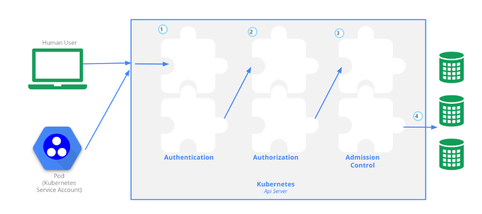
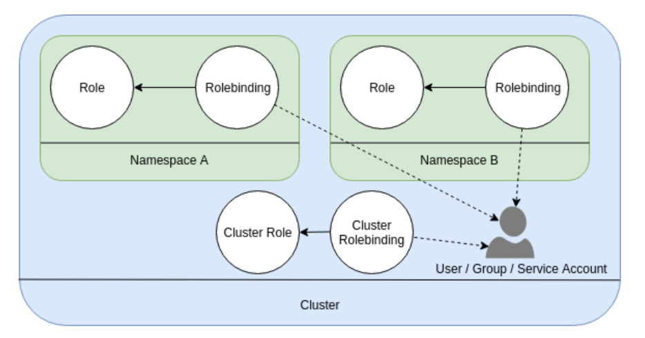
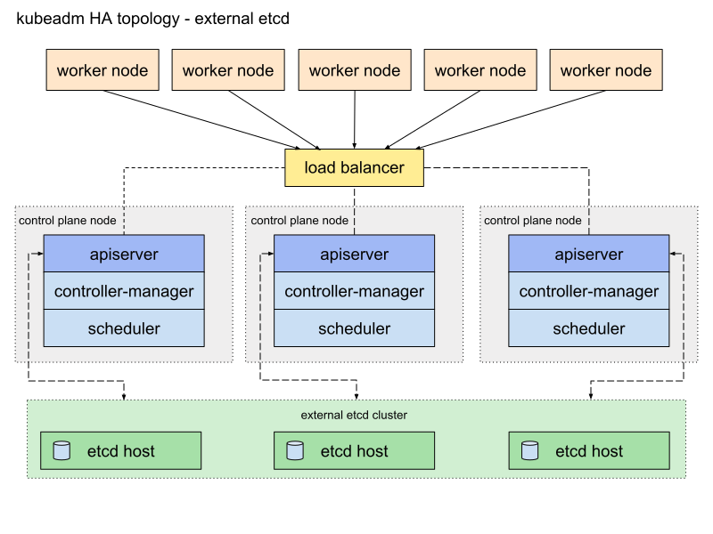

Cluster Architecture, Installation & Configuration
Manage Role Based Access Control (RBAC)
Kubernetes implements an RBAC framework to govern access to resources within a cluster and forms part of the overall Authentication, Authorization and Admission control framework.

To determine who (or what) has access to which resources, a number of steps have to be executed.
Step 1 - Authentication
First step is Authentication which is how a user or service account identifies itself. Depending on the source, a corresponding authentication module is used. Authentication modules include the ability to authenticate from the following:
- Client Certificate
- Password
- Plain Tokens
- Bootstrap Tokens
- JWT Tokens (for service accounts)
All authentication is handled via HTTP over TLS.
Step 2 - Authorization
After a user or service account is authenticated, the request must then be authorized. Any authentication request is followed by some kind of action request, and the action defines the object(s) that request needs to apply to, and what the action is. For example, to list the pods in a given namespace.
Any and all requests are facilitated providing an existing policy gives the user those permissions.
Steps 3 & 4 - Admission Control
Admission Control Modules are software modules that can modify or reject requests. In addition to the attributes available to Authorization Modules, Admission Control Modules can access the contents of the object that is being created or updated. They act on objects being created, deleted, updated or connected (proxy), but not reads.
Role and Rolebindings
Implementing RBAC rules largely involves two object types within Kubernetes - role and rolebindings:

A role grants access to resources within a single namespace.
A rolebinding grants the permissions from a role to a user, group or service account within a single namespace.
clusterrole and clusterrolebindings operate similarly, but obviously provide access to non-namespaced resources.
kubectl api-resources --namespaced=false can be used to determine which resource types are not namespaced. Examples include: node, persistentvolume, storageclass and users.
Users can either be serviceaccounts or users. The former is typically used to authenticate applications, the latter for human users.
To test, the below creates namespace, serviceaccount, role and rolebinding
apiVersion: v1
kind: Namespace
metadata:
name: rbac-testapiVersion: v1
kind: ServiceAccount
metadata:
name: rbac-test-sa
namespace: rbac-test
```
of particular importance is the format of the below.
`apiGroup` : Determines which API group to apply this to.
`resources`: Which resource types to apply this to.
`verbs`: What we can do to these objects (ie create, delete, watch, etc)
```yaml
apiVersion: rbac.authorization.k8s.io/v1
kind: Role
metadata:
name: rbac-test-role
namespace: rbac-test
rules:
- apiGroups: [""]
resources: ["pods"]
verbs: ["get", "list", "watch"]apiVersion: rbac.authorization.k8s.io/v1
kind: RoleBinding
metadata:
name: rbac-test-rolebinding
namespace: rbac-test
roleRef:
apiGroup: rbac.authorization.k8s.io
kind: Role
name: rbac-test-role
subjects:
- kind: ServiceAccount
name: rbac-test-sa
namespace: rbac-testWe can then validate this with kubectl. The following returns yes as that service account can get pods
kubectl -n rbac-test --as=system:serviceaccount:rbac-test:rbac-test-sa auth can-i get pods
yesHowever with secrets, it returns no
kubectl -n rbac-test --as=system:serviceaccount:rbac-test:rbac-test-sa auth can-i get secrets
noUse Kubeadm to install a basic cluster
kubeadm is a utility to bootstrap Kubernetes to a number of existing, vanilla nodes. It takes care of the etcd cluster, Kubernetes master and worker nodes including all the required components to instantiate a viable minimum k8s cluster.
What you get at the end of using kubeadm is a fully working, fully functioning kubernetes cluster.
It's at the opposite end of the spectrum in terms of difficulty compared to, for example, Kelsey Hightower's "Kubernetes the hard way".
For the exam, it is recommended that you become familiar with both ways of deploying Kubernetes clusters.
Kubeadm is a command line utility that performs the following functions:
- kubeadm init to bootstrap a Kubernetes control-plane node
- kubeadm join to bootstrap a Kubernetes worker node and join it to the cluster
- kubeadm upgrade to upgrade a Kubernetes cluster to a newer version
- kubeadm config if you initialized your cluster using kubeadm v1.7.x or lower, to configure your cluster for kubeadm upgrade
- kubeadm token to manage tokens for kubeadm join
- kubeadm reset to revert any changes made to this host by kubeadm init or kubeadm join
- kubeadm version to print the kubeadm version
- kubeadm alpha to preview a set of features made available for gathering feedback from the community
Kubeadm - Master Node Install
In the following examples 3x Ubuntu Server VMs were created
- k8s-cl02-ms01
- k8s-cl02-wk01
- k8s-cl02-wk02
Where appropriate, ensure your nodes have a container runtime installed.
On the master node install the required binaries
apt-get update && apt-get install -y apt-transport-https curl
curl -s https://packages.cloud.google.com/apt/doc/apt-key.gpg | apt-key add -
cat <<EOF >/etc/apt/sources.list.d/kubernetes.list
deb https://apt.kubernetes.io/ kubernetes-xenial main
EOF
apt-get update
apt-get install -y kubelet kubeadm kubectl
apt-mark hold kubelet kubeadm kubectlInitialise the master node:
sudo kubeadm init --pod-network-cidr=10.244.0.0/16Note, the requirement to pass --pod-network is dependent on the chosen CNI. For Flannel, this is required. Kubeadm will also let you know if any prerequisites are not made.
Once completed, a message will be displayed:
Your Kubernetes control-plane has initialized successfully!
To start using your cluster, you need to run the following as a regular user:
mkdir -p $HOME/.kube
sudo cp -i /etc/kubernetes/admin.conf $HOME/.kube/config
sudo chown $(id -u):$(id -g) $HOME/.kube/config
You should now deploy a pod network to the cluster.
Run "kubectl apply -f [podnetwork].yaml" with one of the options listed at:
https://kubernetes.io/docs/concepts/cluster-administration/addons/
Then you can join any number of worker nodes by running the following on each as root:
kubeadm join 172.16.10.80:6443 --token j5nqhd.cnfmnjgc68aato60 \
--discovery-token-ca-cert-hash sha256:cbc91031c1ffa47bbea83aa1cf65e99821a1f582c4363e1a4408715bfd66bb60 Some important pieces of information to note:
-
Kubeadm has created the admin kubeconfig file for you, and recommends copying this to the logged on users home directory for ease
-
Kubeadm has not deployed a pod networking solution yet. Therefore, this is a post-install activity
-
Kubeadm has provided a join command together with a token to add worker nodes. We can regenerate this token if required.
If we issue a kubectl get nodes command we will see the master node is not ready
NAME STATUS ROLES AGE VERSION
k8s-cl02-ms01 NotReady master 6m20s v1.20.2As per the output of kubeadm, install a network solution, Ie flannel.
For flannel to work correctly, you must pass --pod-network-cidr=10.244.0.0/16 to kubeadm init.
Additionally, set /proc/sys/net/bridge/bridge-nf-call-iptables to 1 by running sysctl net.bridge.bridge-nf-call-iptables=1.
Install Flannel:
kubectl apply -f https://raw.githubusercontent.com/coreos/flannel/master/Documentation/kube-flannel.ymlAfter a few seconds, the master node will now be ready
NAME STATUS ROLES AGE VERSION
k8s-cl02-ms01 Ready master 10m v1.20.2
Kubeadm - Install worker nodes
The installation process for worker nodes is similar to master nodes - the only exception is we do not execute the "kubeadm init" command, as this is only run on masters. For workers, we use "kubeadm join".
As prep:
- Install a container runtime
- Install the kubeadm binaries (as above)
To join a worker node to a cluster created by kubeadm we need to use the kubeadm join command with a token generated on the master. This is shown after we run kubeadm init on the master node. However, we can easily regenerate this on the master node should it not be noted down or expired:
(on the master node)
david@k8s-cl02-ms01:~$ kubeadm token create --print-join-command
kubeadm join 172.16.10.80:6443 --token ht55yv.8lq69q0189xhe2ql --discovery-token-ca-cert-hash sha256:cbc91031c1ffa47bbea83aa1cf65e99821a1f582c4363e1a4408715bfd66bb60Use this command on the worker (as root)
root@k8s-cl02-wk01:~# kubeadm join 172.16.10.80:6443 --token ht55yv.8lq69q0189xhe2ql --discovery-token-ca-cert-hash sha256:cbc91031c1ffa47bbea83aa1cf65e99821a1f582c4363e1a4408715bfd66bb60After which confirmation will be displayed:
This node has joined the cluster:
* Certificate signing request was sent to apiserver and a response was received.
* The Kubelet was informed of the new secure connection details.
Run 'kubectl get nodes' on the control-plane to see this node join the cluster.To validate, run kubectl get nodes on the master node:
NAME STATUS ROLES AGE VERSION
k8s-cl02-ms01 Ready master 50m v1.20.2
k8s-cl02-wk01 Ready <none> 2m10s v1.20.2Manage a highly-available Kubernetes cluster
The previous section demonstrated creating a K8s cluster with one master node and several worker nodes - this does not provide resilience for the control plane. Several topologies exist for doing so:
Stacked etcd

- Multiple worker nodes
- Multiple control plane nodes fronted by a loadbalancer
- Embedded etcd within control plane
Notes:
etcd is quorum based. Therefore, if using stacked control plane nodes with etcd, odd numbers must be used.
External etcd

Notes:
- Multiple worker nodes
- Multiple control plane nodes fronted by a loadbalancer
- Etcd is external of the k8s cluster
Notes:
Advantage with this setup is etcd and the control plane can be scaled and managed independently of each other. This provides greater flexibility at the expense of operational complexity.
Assessing cluster health
kubectl get componentstatus is deprecated as of 1.20. A suitable replacement includes probing the API server directly, For example, on a master node, run curl -k https://localhost:6443/livez?verbose which returns:
[+]ping ok
[+]log ok
[+]etcd ok
[+]poststarthook/start-kube-apiserver-admission-initializer ok
[+]poststarthook/generic-apiserver-start-informers ok
.....etcThree endpoints exist - healthz,livez and readyz to indicate the current status of the API server
Provision underlying infrastructure to deploy a Kubernetes cluster
The topology choices above will influence the underlying resources that need to be provisioned. How these are provisioned are specific to the underlying cloud provider. Some generic observations:
- Disable swap.
- Leverage cloud capabilities for HA - ie using multiple AZ's.
- Windows can be used for worker nodes, but not control plane.
Perform a version upgrade on a Kubernetes cluster using Kubeadm
First, install kubeadm to a specific version. This will determine the k8s version that it deploys:
sudo apt-get update && sudo apt-get install -y kubeadm=1.19.0-00 kubelet=1.19.0-00 kubectl=1.19.0-00 && sudo apt-mark hold kubeadmStand up a k8s cluster
sudo kubeadm init --pod-network-cidr=10.244.0.0/16Add CNI
https://raw.githubusercontent.com/coreos/flannel/master/Documentation/kube-flannel.ymlTo upgrade the underlying k8s cluster, we need to upgrade kubeadm.
Update kubeadm
sudo apt-mark unhold kubeadm
sudo apt-get install --only-upgrade kubeadmNext we plan the upgrade - this won't change our cluster but will display what changes can be made:
sudo kubeadm upgrade plan
Components that must be upgraded manually after you have upgraded the control plane with 'kubeadm upgrade apply':
COMPONENT CURRENT AVAILABLE
kubelet 1 x v1.19.0 v1.20.2
Upgrade to the latest stable version:
COMPONENT CURRENT AVAILABLE
kube-apiserver v1.19.7 v1.20.2
kube-controller-manager v1.19.7 v1.20.2
kube-scheduler v1.19.7 v1.20.2
kube-proxy v1.19.7 v1.20.2
CoreDNS 1.7.0 1.7.0
etcd 3.4.9-1 3.4.13-0
You can now apply the upgrade by executing the following command:
kubeadm upgrade apply v1.20.2Important note: kubelet must be upgraded manually after this step.
Upgrade the cluster:
kubeadm upgrade apply v1.20.2upgrade Kubelet:
sudo apt-get install --only-upgrade kubelet kubectlImplement etcd backup and restore
Backing up etcd
Take a snapshot of the DB, then store it in a safe location:
ETCDCTL_API=3 etcdctl snapshot save snapshot.db --cacert /etc/kubernetes/pki/etcd/server.crt --cert /etc/kubernetes/pki/etcd/ca.crt --key /etc/kubernetes/pki/etcd/ca.keyVerify the backup:
sudo ETCDCTL_API=3 etcdctl --write-out=table snapshot status snapshot.db
+----------+----------+------------+------------+
| HASH | REVISION | TOTAL KEYS | TOTAL SIZE |
+----------+----------+------------+------------+
| 2125d542 | 364069 | 770 | 3.8 MB |
+----------+----------+------------+------------+Restore to etcd
To perform a restore:
ETCDCTL_API=3 etcdctl snapshot restore snapshot.db